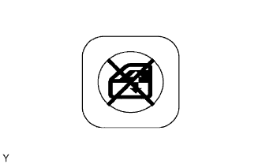

HỆ THỐNG ĐIỀU KHIỂN CỬA SỔ ĐIỆN > KIỂM TRA TRÊN XE |
| 1. KIỂM TRA CÔNG TẮC CHÍNH NÂNG HẠ CỬA SỔ ĐIỆN (CÔNG TẮC KHOÁ CỬA SỔ) |
|  |
Kiểm tra rằng các thao tác của cửa sổ điện hành khách trước và các cửa sổ phía sau bị vô hiệu hoá khi công tắc khoá cửa sổ của công tắc chính được ấn xuống.
Kiêûm tra rằng cửa sổ phía hành khách và các cửa sổ sau có thể vận hành được khi ấn công tắc khóa cửa sổ một lần nữa.
| 2. KIỂM TRA CHỨC NĂNG LÊN/XUỐNG KÍNH BẰNG TAY |
Kiểm tra rằng cửa sổ người lái hoạt động như sau:
| Điều kiện | Công tắc chính | Vận hành công tắc | Cửa sổ điện |
| Khoá điện ON | Phía người lái | Kéo lên | LÊN (đóng) |
| Khoá điện ON | Phía người lái | Hãy ấn công tắc xuống giữa chừng | XUỐNG (Mở) |
Kiểm tra rằng cửa sổ điện hành khách trước hoạt động như sau:
| Điều kiện | Công tắc bộ điều chỉnh | Vận hành công tắc | Cửa sổ điện |
| Phía hành khách trước | Kéo lên | LÊN (đóng) |
| Phía hành khách trước | Hãy ấn xuống | XUỐNG (Mở) |
Kiểm tra rằng cửa sổ điện sau trái hoạt động như sau:
| Điều kiện | Công tắc bộ điều chỉnh | Vận hành công tắc | Cửa sổ điện |
| Sau trái | Kéo lên | LÊN (đóng) |
| Sau trái | Hãy ấn xuống | XUỐNG (Mở) |
Kiểm tra rằng cửa sổ điện sau phải hoạt động như sau:
| Điều kiện | Công tắc bộ điều chỉnh | Vận hành công tắc | Cửa sổ điện |
| Sau phải | Kéo lên | LÊN (đóng) |
| Sau phải | Hãy ấn xuống | XUỐNG (Mở) |
| 3. KIỂM TRA CHỨC NĂNG XUỐNG KÍNH TỰ ĐỘNG |
Kiểm tra rằng cửa sổ người lái hoạt động như sau:
| Điều kiện | Công tắc chính | Vận hành công tắc | Cửa sổ điện |
| Khoá điện ON | Phía người lái | Hãy ấn xuống hoàn toàn | XUỐNG TỰ ĐỘNG (mở hoàn toàn) |
| 4. KIỂM TRA CHỨC NĂNG LÊN/XUỐNG KÍNH TỪ XA |
Kiểm tra rằng cửa sổ điện hành khách trước hoạt động như sau:
| Điều kiện | Công tắc chính | Vận hành công tắc | Cửa sổ điện |
| Phía hành khách trước | Kéo lên | LÊN (đóng) |
| Phía hành khách trước | Hãy ấn xuống | XUỐNG (Mở) |
Kiểm tra rằng cửa sổ điện sau trái hoạt động như sau:
| Điều kiện | Công tắc chính | Vận hành công tắc | Cửa sổ điện |
| Sau trái | Kéo lên | LÊN (đóng) |
| Sau trái | Hãy ấn xuống | XUỐNG (Mở) |
Kiểm tra rằng cửa sổ điện sau phải hoạt động như sau:
| Điều kiện | Công tắc chính | Vận hành công tắc | Cửa sổ điện |
| Sau phải | Kéo lên | LÊN (đóng) |
| Sau phải | Hãy ấn xuống | XUỐNG (Mở) |
| 5. KIỂM TRA HOẠT ĐỘNG PTC |
Kéo và giữ công tắc cửa sổ lên lâu hơn 90 giây. Sau đó thả công tắc ra.
Kiểm tra rằng việc ấn công tắc xuống không thể dịch chuyển được cửa sổ.
Hãy đợi đến 60 giây kể từ khi nhả công tắc bước thứ nhất. Kiểm tra rằng bấm công tắc sẽ cho kết quả dịch chuyển cửa sổ bình thường.